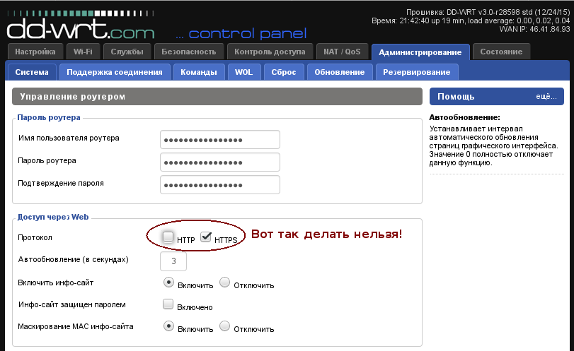

У прошивки DD-WRT есть следующая проблема: если войти в веб-интерфейс, перейти на вкладку Администрирование -> Система, и в блоке "Доступ через Web" снять галку с протокола HTTP, и поставить галку на протоколе HTTPS, то после этого зайти через современный браузер на страницу администрирования станет невозможно. Связано это с тем, что в прошивке стоит устаревший сертификат, а все современные браузеры уже не имеют возможности отключить проверку HTTPS сертификата (как минимум, этой возможности уже нет у Firefox и Chromium).

Получается, что войти в веб-админку невозможно. И невозможно снова включить HTTP протокол вместо HTTPS. Замкнутый круг.
Но есть обходной путь. Скорее всего, на роутере активирован доступ по telnet или по ssh. Узнать о том, какие-сервиса доступны, можно через программу nmap (в Linux):
$ nmap 192.168.1.1
Starting Nmap 6.47 ( http://nmap.org ) at 2017-09-25 21:08 MSK
Nmap scan report for 192.168.1.1
Host is up (0.0034s latency).
Not shown: 997 closed ports
PORT STATE SERVICE
23/tcp open telnet
53/tcp open domain
443/tcp open https
Но в принципе, можно попытаться зайти на обум по одному или другому протоколу через соответствующую программу, например:
telnet 192.168.1.1
или
ssh 192.168.1.1
В качествел логина надо писать root а не admin, а в качестве пароля надо писать пароль от пользователя admin, под которым обычно происходит вход в веб-панель администрирования. Если все нормально, будет выведено сообщение:
DD-WRT v3.0-r28598 std (c) 2015 NewMedia-NET GmbH
Release: 12/24/15
DD-WRT login: root
Password:
==========================================================
___ ___ _ _____ ______ ____ ___
/ _ \/ _ \___| | /| / / _ \/_ __/ _ __|_ / / _ \
/ // / // /___/ |/ |/ / , _/ / / | |/ //_ <_/ // /
/____/____/ |__/|__/_/|_| /_/ |___/____(_)___/
DD-WRT v3.0
http://www.dd-wrt.com
==========================================================
BusyBox v1.24.1 (2015-12-24 04:49:45 CET) built-in shell (ash)
Для отключения HTTPS и включения HTTP необходимо дать следующие команды:
nvram set httpd_enable=1
nvram set http_enable=1
nvram set http_lanport=80
nvram set httpsd_enable=0
nvram set https_enable=0
nvram set http_wanport=8080
nvram commit
reboot
В результате настройки будут применены, роутер перезагрузится и появится возможность снова зайти в панель администрирования по протоколу HTTP.